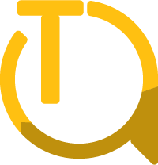

Product Sourcing
We research product availability, pricing signals, supplier reliability, and market options so clients can make clearer purchasing decisions.

The Achiever's Hub Nigeria Limited Start SourcingResearch-led supply and distribution
The Achiever's Hub Nigeria Limited helps clients identify products, compare markets, coordinate trusted suppliers, and move resources across Nigeria, the United Kingdom, the United States, and wider global trade routes.
What we do
We research product availability, pricing signals, supplier reliability, and market options so clients can make clearer purchasing decisions.
We help compare vendors, request documentation, verify basic fit, and organize the resources needed before procurement begins.
We support practical delivery planning across local and international routes, with attention to timing, quantity, documentation, and operational impact.
Our leadership experience in IT infrastructure, cloud, and data center environments strengthens our approach to sourcing technical and business-critical resources.
We support sourcing for construction projects by researching materials, equipment, supplier options, and delivery requirements before purchase decisions are made.
We help identify manufacturing inputs, compare market availability, and coordinate procurement pathways for production, maintenance, and operational needs.
Global Product Finder
Use this quick sourcing model to begin market research. Enter a product, choose a target region, and the tool will create a practical sourcing checklist with marketplace search links and key questions to ask suppliers.
Enter a product above to generate a sourcing path.
Our model
Identify the product, application, specification, quantity, budget, and target country.
Review market options, supplier signals, delivery constraints, and documentation needs.
Organize procurement steps, resource ordering, and communication between stakeholders.
Support distribution planning, tracking discipline, and post-delivery issue resolution.
Leadership profile
Michael Fakorede is a supply, distribution, and technology operations leader with practical experience across Nigeria, the United Kingdom, and the United States. His career includes work with Arbico PLC, a construction company, as well as Capgemini UK and Midwich Group PLC in the United Kingdom.
He has led and supervised IT infrastructure initiatives across on-premises and cloud environments, coordinated project resources, ordered critical materials, and supported go-live execution where the right planning and supplier coordination made a measurable operational impact. His background also includes exposure to AWS-based data center implementation work in the United States.
Through The Achiever's Hub, Michael brings that project discipline into research-led sourcing and distribution: understanding what clients need, finding where it can be sourced, comparing markets, and coordinating resources with a global operator's mindset.
Why clients trust the model
Contact
Share the product, quantity, target country, deadline, budget range, and any preferred brand or specification. We will help you think through the market and sourcing route.
USA address: 181 N Pottstown Pike, Exton, PA, USA
Nigeria address: Office 1, Ogoluwa Street, Afobaje Estate, Otta, Ogun State, Nigeria